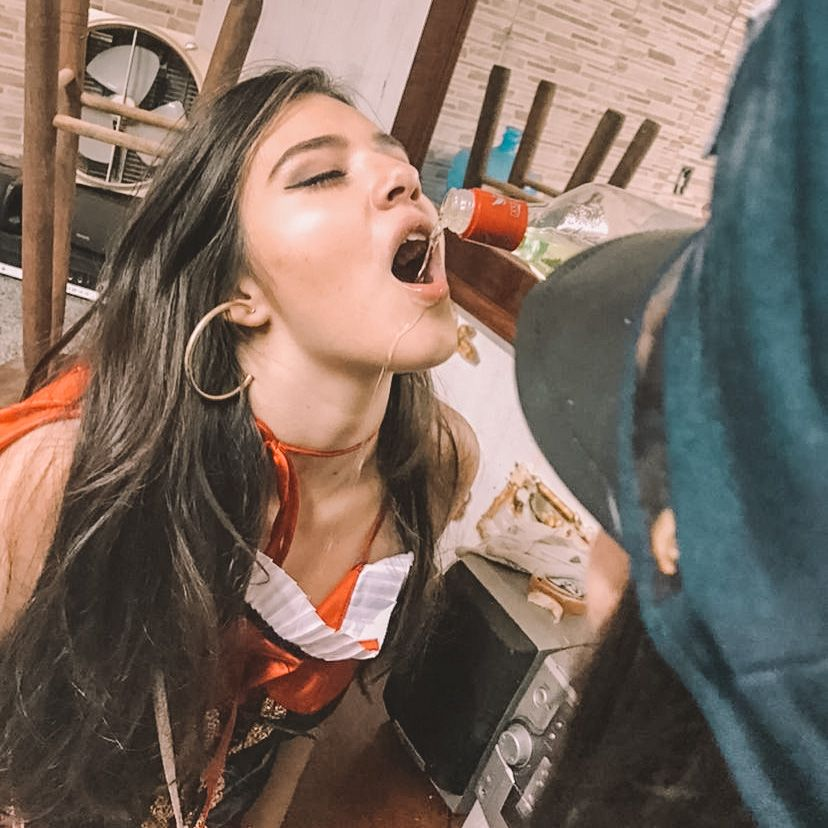
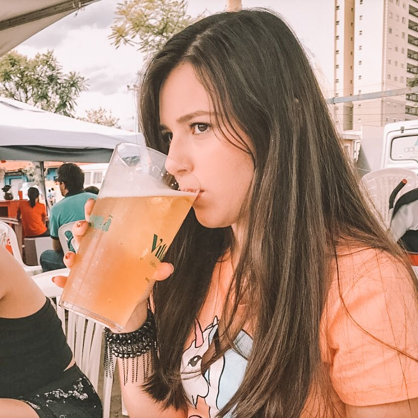

Meter o louco
Quando tenho tempo livre, eu gosto de sair, de beber e de dançar. Aproveito os rolês ao máximo e as vezes passo do ponto.
Sou inimiga do fim, bato carteirinha no d.a, não dispenso uma oportunidade para tomar uma brejinha e raramente recusarei um convite para sair.
← Voltar ao portfólio